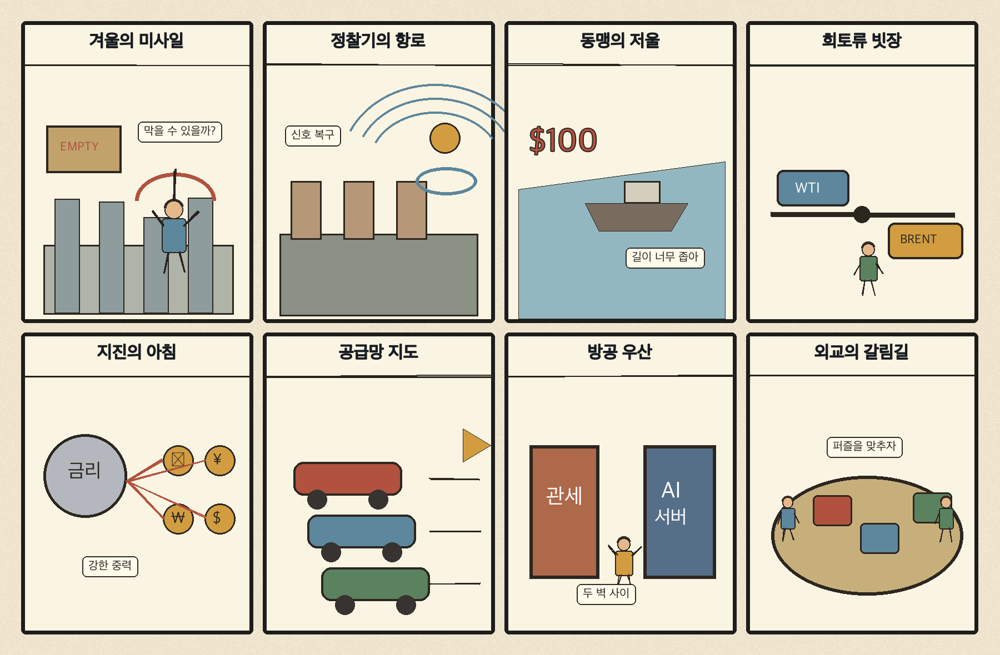
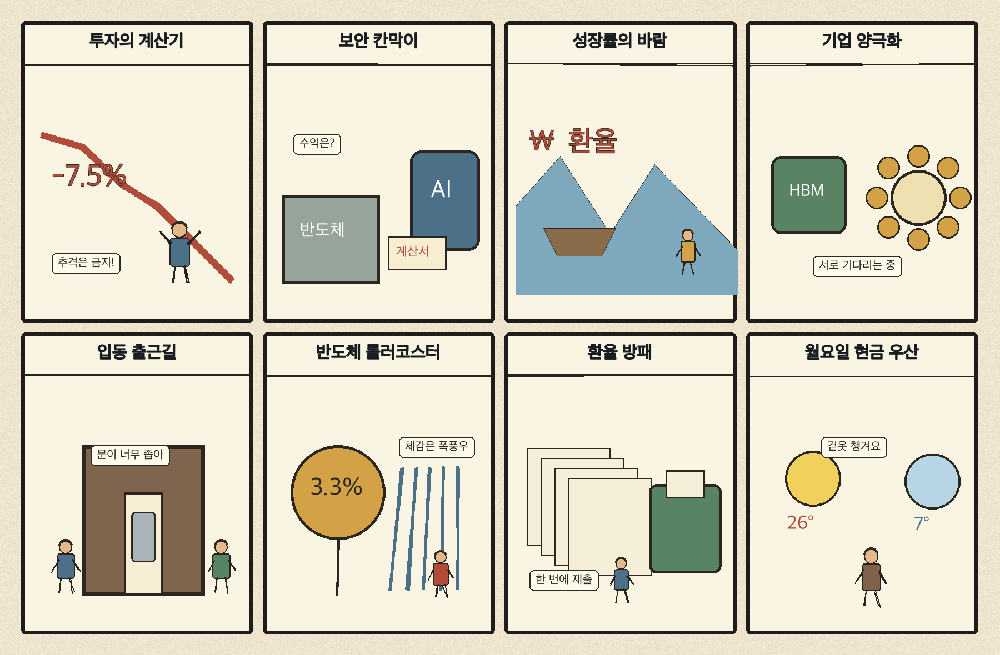

01
로켓랩 · 48.28→53.07달러 · +9.92%
내용요약 시가 대비 +9.92%로 조사군 최상위권 상승을 기록했습니다.
예상여파 급등 뒤 변동성이 커질 수 있어 다음 거래일 거래량과 갭 유지 여부가 중요합니다.
MORNING_BRIEFING_20261108
작성 시각: 2026-11-08 06:35 KST · 직전 미국 정규장과 2026-11-08 KST 당일 공개 기사 기준
11월 6일 뉴욕증시는 다우 -0.46%, S&P 500 +0.31%, 나스닥 +1.09%로 혼조 속 기술주 중심 반등을 보였습니다. 그러나 브로드컴 -5.61%, 엔비디아 -2.33% 등 반도체 내부의 차별화가 컸습니다. 한국 시장은 11월 6일 KOSPI -6.02%, KOSDAQ -5.03%로 다시 급락해 월요일에는 미국 반등보다 국내 수급 안정과 저점 유지 여부가 더 중요합니다.
| 지수 | 종가 | 등락률 | 한국 증시 시사점 |
|---|---|---|---|
| 다우존스 | 51,285.73 | -0.46% | 경기민감주 위험선호 위축 |
| S&P 500 | 7,376.86 | +0.31% | 성장주 변동성 확대 |
| 나스닥 종합 | 24,579.43 | +1.09% | 성장주 변동성 확대 |
급락 다음 날 기술주가 반등했지만 종목별 차별화는 컸습니다.
금요일 5,059.69로 밀리며 이틀 연속 대폭 하락했습니다.
AMD는 +1.04%, 엔비디아 -2.33%, 브로드컴 -5.61%였습니다.
주말 뉴스와 외국인 수급을 함께 반영해 갭 변동성이 클 수 있습니다.
11월 6일 보고서는 수급·컨센서스·30건 이상 유사 조건 표본을 모두 확보하지 못해 공식 추천을 내지 않았습니다. 사후에 종목을 추가하지 않습니다.
| 시장 | 종가 | 등락률 | 기준 |
|---|---|---|---|
| KOSPI | 5,059.69 | -6.02% | 11월 6일 · 시가 대비 -3.87% |
| KOSDAQ | 644.27 | -5.03% | 11월 6일 · 시가 대비 -1.55% |
| 다우존스 | 51,285.73 | -0.46% | 미국 11월 6일 정규장 |
| S&P 500 | 7,376.86 | +0.31% | 미국 11월 6일 정규장 |
| 나스닥 종합 | 24,579.43 | +1.09% | 미국 11월 6일 정규장 |
로켓랩 +9.92%, 앱러빈 +9.91%로 조사군 최상위였습니다.
쇼피파이 +3.81%, 퀄컴 +2.56%로 상승했습니다.
크라우드스트라이크 -5.98%, 브로드컴 -5.61%였습니다.
어플라이드머티리얼즈 -3.88%, 마벨 -2.67%로 밀렸습니다.
내용요약 시가 대비 +9.92%로 조사군 최상위권 상승을 기록했습니다.
예상여파 급등 뒤 변동성이 커질 수 있어 다음 거래일 거래량과 갭 유지 여부가 중요합니다.
내용요약 시가 대비 +9.91%로 강하게 반등했습니다.
예상여파 광고기술 성장주의 위험선호 회복 신호지만 단기 추격매수 부담도 커졌습니다.
내용요약 시가 대비 -5.98%로 조사군 최하위였습니다.
예상여파 사이버보안주 내 차익실현과 성장주 선별 매매가 이어질 수 있습니다.
내용요약 시가 대비 -5.61%로 하락했습니다.
예상여파 나스닥 반등에도 AI 인프라 종목의 고평가 부담과 차별화가 남았습니다.
내용요약 시가 대비 -3.88%로 약세를 보였습니다.
예상여파 반도체 장비 투자 기대가 데이터센터 정책 불확실성에 민감하게 반응했습니다.
나스닥 +1.09% 반등은 월요일 국내 성장주의 낙폭 회복에 우호적이지만, 엔비디아·브로드컴·마이크론은 약세여서 반도체 전반의 추세 반전을 뜻하지는 않습니다. KOSPI가 금요일 시가 대비 -3.87%, 전일 종가 대비 -6.02% 밀린 만큼 반대매매와 환율, 외국인 현·선물 수급이 우선 변수입니다. 장 초반 갭 반등은 추격하지 않고 저점 유지와 거래대금 정상화를 확인하는 대응이 필요합니다.
오늘은 추천 없음 — 현금 관망
주말 휴장 중이며 KOSPI가 이틀 연속 5% 넘게 하락한 고변동성 국면입니다. 전일까지의 외국인·기관 수급, 컨센서스 변화와 30건 이상 유사 조건 표본을 함께 확보해 종합점수 75점·상승확률 60%·예상 손익비 1.5를 모두 검증한 종목이 없습니다.
관심 연결종목 보안·전력망·통신칩은 관찰 대상일 뿐 매수 추천이 아닙니다. 월요일 급락 뒤 갭 반등 종목은 추격매수를 금지합니다.
금요일 급락 뒤 현·선물 매도 강도가 줄어드는지 우선 확인합니다.
미국 반도체 혼조가 국내 HBM주에 어떻게 반영되는지 봅니다.
원화 약세와 반대매매성 매물이 장중 낙폭을 키우는지 점검합니다.
이번 주 미국 물가 지표 전망이 금리와 성장주 할인율을 흔드는지 살핍니다.
핵심 요약: AI 데이터센터 투자 규제와 전력망 병목이 단기 시장 변수가 된 가운데, HBM 가격 상승은 공급사와 고객사에 엇갈린 영향을 주고 있습니다. 3D 메모리 연구와 능동형 사이버보안은 중장기 기술 경쟁의 축으로 남아 있습니다.
내용요약 미국 데이터센터 규제 우려로 급락한 코스피가 미국 증시 반등을 발판으로 회복을 시험한다는 분석입니다.
예상여파 AI 인프라 정책 불확실성이 남아 있어 반도체 반등은 외국인 수급과 거래량을 동반하는지 확인해야 합니다.
내용요약 미국 의회 권력 재편이 데이터센터 투자 속도와 전력비 정책의 변수로 떠올랐다는 보도입니다.
예상여파 서버·메모리 수요의 장기 방향보다 인허가와 전력망 병목이 단기 투자심리를 좌우할 수 있습니다.
내용요약 중국 AI칩 업계가 급등한 HBM 가격과 재고 부담으로 수익성 압박을 받는다는 기사입니다.
예상여파 메모리 가격 강세는 공급사에 유리하지만 고객사의 조달 축소와 대체 기술 탐색을 촉진할 수 있습니다.
내용요약 TSMC가 파운드리 본업 집중 방침을 밝히며 3D D램 진출설을 부인했고 관련 연구는 이어간다는 보도입니다.
예상여파 첨단 패키징과 3D 메모리 기술 경쟁은 계속되지만 단기 사업 재편을 과도하게 해석할 필요는 없습니다.
내용요약 주소와 실행 위치를 바꾸는 국내 보안기술이 일본·인도네시아 시장의 관심을 받고 있다는 기사입니다.
예상여파 AI 기반 공격이 늘수록 능동형 방어와 제로트러스트 보안 수요가 함께 커질 가능성이 있습니다.
핵심 요약: 우크라이나 에너지 시설 공격과 북러 군사협력 논란이 이어졌고, 미국은 유럽 정찰 배치와 중국 희토류 압박을 병행했습니다. 동맹국의 안보 자율성 논의와 일본 지진까지 지정학·공급망 위험을 함께 점검해야 합니다.
내용요약 젤렌스키 대통령이 러시아의 우크라이나 에너지 시설 공격에 북한제 KN-23 미사일이 쓰였다고 밝혔다는 보도입니다.
예상여파 겨울철 전력 인프라 피해와 북러 군사협력 논란이 확대되며 유럽의 방공 지원 논의에 영향을 줄 수 있습니다.
내용요약 미 공군이 특수정찰기를 영국에 배치해 러시아 견제와 중동 대응 가능성이 함께 거론된다는 기사입니다.
예상여파 유럽과 중동의 동시 긴장이 커지면 방산·에너지 시장의 위험 프리미엄이 높아질 수 있습니다.
내용요약 미국 의회 권력 재편 뒤 동맹국들이 대미 안보 의존 축소 가능성을 신중히 모색한다는 보도입니다.
예상여파 자주국방과 공급망 다변화 논의가 커지며 동맹의 방위비·무역 협상도 복잡해질 수 있습니다.
내용요약 미국이 중국에 희토류 합의 이행을 압박하면서 무역 갈등 재점화 가능성이 제기됐습니다.
예상여파 희토류·배터리·반도체 공급망의 가격 변동과 대체 조달 투자가 다시 확대될 수 있습니다.
내용요약 일본 시즈오카현 서부에서 규모 5.7 지진이 발생했다는 당일 보도입니다.
예상여파 인명·시설 피해와 교통 차질 여부를 확인하면서 일본 제조 공급망의 단기 영향도 점검해야 합니다.

핵심 요약: 미국 정치 변화가 한국 기업의 대미 투자와 AI 데이터센터 의존 성장 전망을 흔들고 있습니다. 국내에서는 AI 해킹 대응체계와 대·중소기업 수익성 격차가 과제로 떠올랐고, 입동 추위와 중부 비·강원 산지 눈에 대비가 필요합니다.
내용요약 미국 정치 지형 변화로 한국 기업의 대미 투자가 상업성과 정책 지속성을 더 엄격히 따져야 한다는 보도입니다.
예상여파 보조금과 관세 조건이 흔들릴 경우 자동차·배터리·반도체의 투자 일정과 수익성 전망이 달라질 수 있습니다.
내용요약 AI 해킹 시대에도 국내 보안 감독체계가 기관별로 나뉘어 있어 재편 필요성이 커졌다는 기사입니다.
예상여파 통합 대응체계와 사고 책임 기준이 정비되면 금융·통신·공공 부문의 보안 투자가 확대될 수 있습니다.
내용요약 미국 데이터센터 규제 우려가 반도체 수출과 설비투자를 통해 내년 한국 성장률의 변수로 떠올랐다는 분석입니다.
예상여파 AI 투자 둔화가 현실화하면 수출 의존도가 높은 한국 경제의 성장 경로와 세수에도 부담이 될 수 있습니다.
내용요약 대기업과 중소기업의 이자보상비율 격차가 크게 벌어졌다는 보도입니다.
예상여파 고금리와 내수 둔화가 길어질수록 취약 중소기업의 자금난과 고용 조정 위험이 커질 수 있습니다.
내용요약 입동과 함께 서울 등 중부지방에 올가을 가장 강한 추위가 찾아온다는 기상 보도입니다.
예상여파 영하권 체감온도와 비·강원 산지 눈에 대비하고 교통과 난방 수요 변화를 살펴야 합니다.
